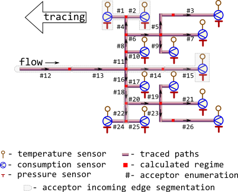

R/m325tracebw.R
m325tracebw.RdTrace values of thermal-hydraulic regime (temperature, pressure, consumption) in the bunched pipeline against the flow direction using norms of heat flux values prescribed by Minenergo Order 325.
m325tracebw(
sender = 6,
acceptor = 7,
temperature = 70,
pressure = pipenostics::mpa_kgf(6),
consumption = 20,
d = 100,
len = 72.446,
year = 1986,
insulation = 0,
laying = "tunnel",
beta = FALSE,
exp5k = TRUE,
roughness = 0.001,
inlet = 0.5,
outlet = 1,
method = "romeo",
opinion = "median",
verbose = TRUE,
csv = FALSE,
file = "m325tracebw.csv"
)identifier of the node which heat carrier flows out.
Type: any type that can be painlessly coerced to character by
as.character.
identifier of the node which heat carrier flows in. According to topology
of test bench considered this identifier should be unique for every row.
Type: any type that can be painlessly coerced to character by
as.character.
snapshot of thermal-hydraulic regime state: temperature of heat carrier
(water) sensor-measured on the terminal acceptor node, [°C].
Use NA_float_s for nodes without temperature sensor.
Type: assert_double.
snapshot of thermal-hydraulic regime state: sensor-measured
absolute pressure
of heat carrier (water) inside the pipe (i.e. acceptor's incoming edge),
[MPa]. Type: assert_double.
snapshot of thermal-hydraulic regime state:
sensor-measured amount of heat carrier (water) on terminal node that is
transferred by pipe (i.e. acceptor's incoming edge) during a period,
[ton/hour]. Type: assert_double.
Use NA_float_s for nodes without consumption sensor.
internal diameter of pipe (i.e.diameter of acceptor's incoming edge),
[mm].
Type: assert_double.
pipe length (i.e. length of acceptor's incoming edge), [m].
Type: assert_double.
year when the pipe (i.e. acceptor's incoming edge) is put in operation
after laying or total overhaul.
Type: assert_integerish.
identifier of insulation that covers the exterior of pipe (i.e. acceptor's incoming edge):
0no insulation
1foamed polyurethane or analogue
2polymer concrete
Type: assert_subset.
type of pipe laying depicting the position of pipe in space. Only five types of pipe laying are considered:
air,
channel,
room,
tunnel,
underground.
Type: assert_subset.
logical indicator: should they consider additional heat losses of fittings
located on this pipe (i.e. acceptor's incoming edge)?
Type: assert_logical.
logical indicator for regime of pipe (i.e. acceptor's incoming edge): if
TRUE pipe is operated more that 5000 hours per year.
Type: assert_logical.
roughness of internal wall of pipe (i.e. acceptor's incoming edge),
[m]. Type: assert_logical.
elevation of pipe inlet, [m]. Type: assert_double.
elevation of pipe outlet, [m]. Type: assert_double.
method of determining Darcy friction factor:
romeo
vatankhan
buzelli
Type: assert_choice.
For more details see dropp.
method for aggregating values of regime parameters on each node for the next tracing step:
meanvalues of parameter are averaged before the next tracing step
medianmedian of parameter values are used for the next tracing step
Type: assert_choice.
logical indicator: should they watch tracing process on console?
Type: assert_flag.
logical indicator: should they incrementally dump results to csv-file
while tracing?
Type: assert_flag.
name of csv-file which they dump results to.
Type: assert_character of length 1 that can be used safely
to create a file and write to it.
data.frame containing results of tracing in
long format
(narrow format)
mostly like it returned by function m325tracefw:
nodeidentifier of the node for which regime parameters is calculated.
Values in this vector are identical to those in argument acceptor.
Type: assert_character.
traceconcatenated identifiers of nodes from which regime parameters are
traced for the given node. Identifier sensor is used when
values of regime parameters for the node are sensor readings.
Type: assert_character.
backwardidentifier of tracing direction. It constantly equals to TRUE.
Type: assert_logical.
aggregationaggregation method associated with values of calculated temperature or
pressure in data.frame's row for the node:
identityvalues (opinions) of temperature or pressure as they are (no aggregation).
spanspan of values (opinions) of temperature or pressure for the node
medianmedian of values (opinions) of temperature or pressure for the node
meanavaraged values (opinions) temperature or pressure for the node
Type: assert_character.
temperaturesnapshot of thermal-hydraulic regime state: traced temperature of heat
carrier (water) that is associated with the node, [°C]
Type: assert_double.
pressuresnapshot of thermal-hydraulic regime state: traced pressure of heat
carrier (water) that is associated with the node, [MPa]
Type: assert_double.
consumptionsnapshot of thermal-hydraulic regime state: traced pressure of heat
carrier (water) that is associated with the node, [ton/hour]
Type: assert_double.
jobvalue of trace step counter.
Type: assert_integer.
The calculated (values of) regime may be considered as representation of district heating process in conditions of hypothetically perfect technical state of pipe walls and insulation.
They consider the topology of district heating network much similar to
m325testbench:

Tracing starts from sensor-equipped nodes and goes backwards, i.e against the flow direction.
Though some input arguments are natively vectorized their individual values
all relate to common part of district heating network, i.e. associated with
common object. It is due to isomorphism between vector representation and
directed graph of this network. For more details of isomorphic topology
description see m325testbench.
Before tracing starts for the next node, previously calculated values of temperature or pressure at the node are aggregated by either averaging or by median. The latter seems more robust for avoiding strong influence of possible outliers which may come from actual heating transfer anomalies, erroneous sensor readings or wrong pipeline specifications.
Aggregation for values of consumption at the node is always sum.
Other Regime tracing:
m325tracebwm(),
m325tracefw(),
m325traceline()
# It is possible to run without specification of argument values:
m325tracebw()
#>
#> 2022-03-03 18:48:29 m325tracebw | start backward tracing; segments 1;
#> 2022-03-03 18:48:29 m325tracebw | start job; job 0;
#> 2022-03-03 18:48:29 m325tracebw | now process; 1 node(s); [7]
#> 2022-03-03 18:48:29 m325tracebw | trace temperature;;
#> 2022-03-03 18:48:29 m325tracebw | trace pressure;;
#> 2022-03-03 18:48:29 m325tracebw | finish job; job 0; processed node(s) 1
#> 2022-03-03 18:48:29 m325tracebw | finish backward tracing;;
#> node trace backward aggregation temperature pressure consumption job
#> 1 7 sensor TRUE identity 70 0.588399 20 0
#> span 7 sensor TRUE span 0 0.000000 20 0
#> median 7 sensor TRUE median 70 0.588399 20 0
#> mean 7 sensor TRUE mean 70 0.588399 20 0
# Get isomorphic representation of district heating network graph:
nx <- pipenostics::m325testbench
nx$d <- 1e3*nx$d # convert [m] to [mm]
# When tracing large network graphs put screen log to file
output <- do.call("m325tracebw", c(as.list(nx), verbose = TRUE))
#>
#> 2022-03-03 18:48:29 m325tracebw | start backward tracing; segments 26;
#> 2022-03-03 18:48:29 m325tracebw | start job; job 0;
#> 2022-03-03 18:48:29 m325tracebw | now process; 13 node(s); [1,10,15,17,19,2,21,24,25,26,3,7,9]
#> 2022-03-03 18:48:29 m325tracebw | trace temperature;;
#> 2022-03-03 18:48:29 m325tracebw | trace pressure;;
#> 2022-03-03 18:48:29 m325tracebw | finish job; job 0; processed node(s) 13
#> 2022-03-03 18:48:29 m325tracebw | start job; job 1;
#> 2022-03-03 18:48:29 m325tracebw | now process; 5 node(s); [14,22,23,4,5]
#> 2022-03-03 18:48:29 m325tracebw | trace temperature;;
#> 2022-03-03 18:48:29 m325tracebw | trace pressure;;
#> 2022-03-03 18:48:29 m325tracebw | finish job; job 1; processed node(s) 5
#> 2022-03-03 18:48:29 m325tracebw | start job; job 2;
#> 2022-03-03 18:48:29 m325tracebw | now process; 2 node(s); [20,6]
#> 2022-03-03 18:48:29 m325tracebw | trace temperature;;
#> 2022-03-03 18:48:29 m325tracebw | trace pressure;;
#> 2022-03-03 18:48:29 m325tracebw | finish job; job 2; processed node(s) 2
#> 2022-03-03 18:48:29 m325tracebw | start job; job 3;
#> 2022-03-03 18:48:29 m325tracebw | now process; 2 node(s); [18,8]
#> 2022-03-03 18:48:29 m325tracebw | trace temperature;;
#> 2022-03-03 18:48:29 m325tracebw | trace pressure;;
#> 2022-03-03 18:48:29 m325tracebw | finish job; job 3; processed node(s) 2
#> 2022-03-03 18:48:29 m325tracebw | start job; job 4;
#> 2022-03-03 18:48:29 m325tracebw | now process; 2 node(s); [11,16]
#> 2022-03-03 18:48:29 m325tracebw | trace temperature;;
#> 2022-03-03 18:48:29 m325tracebw | trace pressure;;
#> 2022-03-03 18:48:29 m325tracebw | finish job; job 4; processed node(s) 2
#> 2022-03-03 18:48:29 m325tracebw | start job; job 5;
#> 2022-03-03 18:48:29 m325tracebw | now process; 1 node(s); [13]
#> 2022-03-03 18:48:29 m325tracebw | trace temperature;;
#> 2022-03-03 18:48:29 m325tracebw | trace pressure;;
#> 2022-03-03 18:48:29 m325tracebw | finish job; job 5; processed node(s) 1
#> 2022-03-03 18:48:29 m325tracebw | start job; job 6;
#> 2022-03-03 18:48:29 m325tracebw | now process; 1 node(s); [12]
#> 2022-03-03 18:48:29 m325tracebw | trace temperature;;
#> 2022-03-03 18:48:29 m325tracebw | trace pressure;;
#> 2022-03-03 18:48:29 m325tracebw | finish job; job 6; processed node(s) 1
#> 2022-03-03 18:48:29 m325tracebw | finish backward tracing;;
# Distinct options for opinion aggregation lead to distinct traced
# temperature and pressure:
output <- list(
mean = do.call("m325tracebw",
c(as.list(nx), verbose = FALSE, opinion = "mean")),
median = do.call("m325tracebw",
c(as.list(nx), verbose = FALSE, opinion = "median"))
)
stopifnot(
round(
subset(
output$mean,
node == 13 & aggregation == "median",
c("temperature", "pressure", "consumption")
) - subset(
output$median,
node == 13 & aggregation == "median",
c("temperature", "pressure", "consumption")
),
5
# difference between aggregation options
) == c(dt = 0.03732, dp = 0.00139, dg = 0)
)